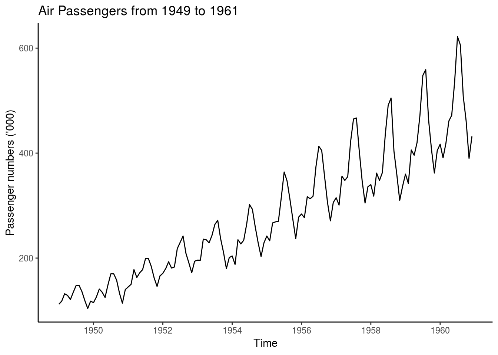
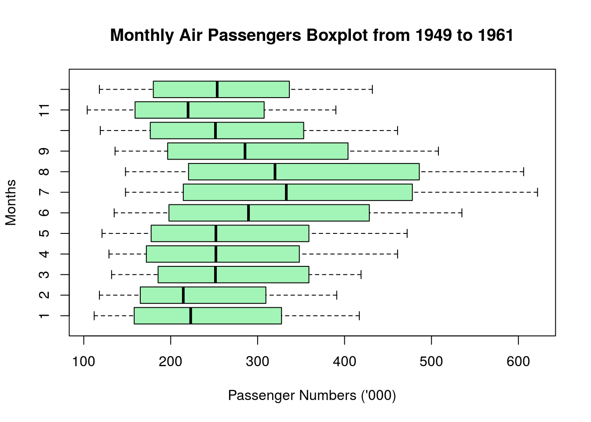
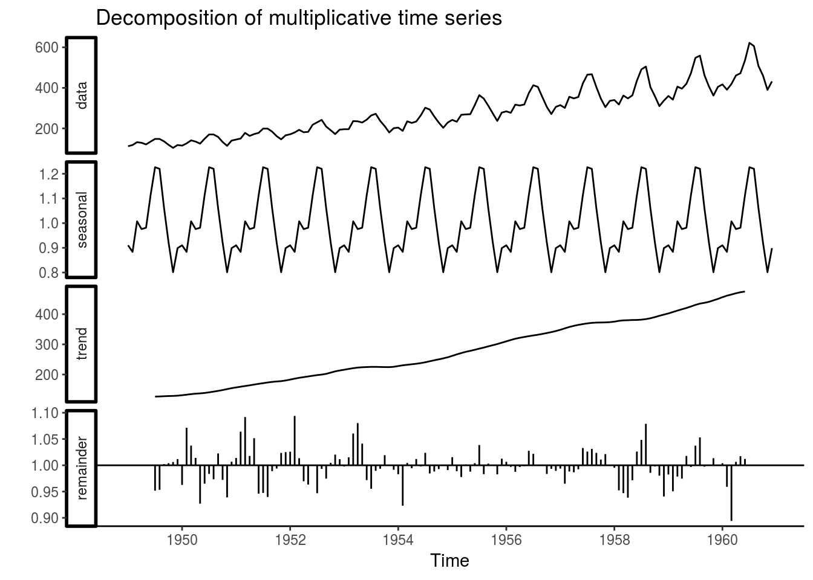
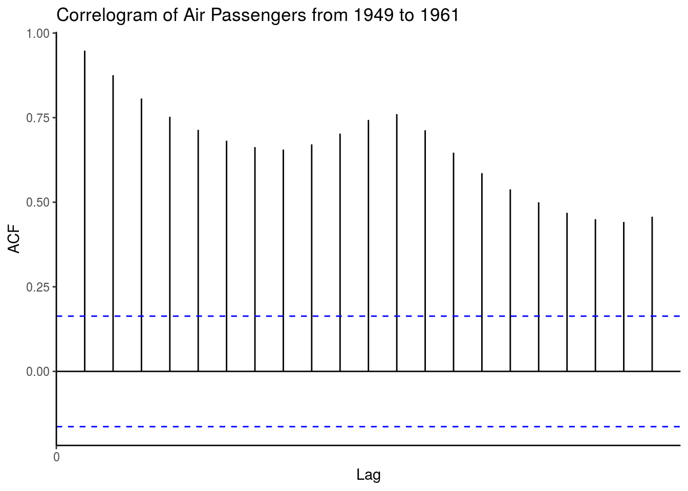
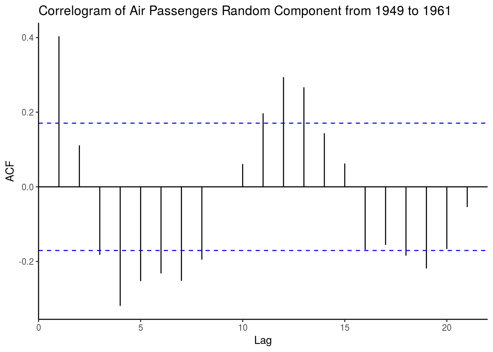
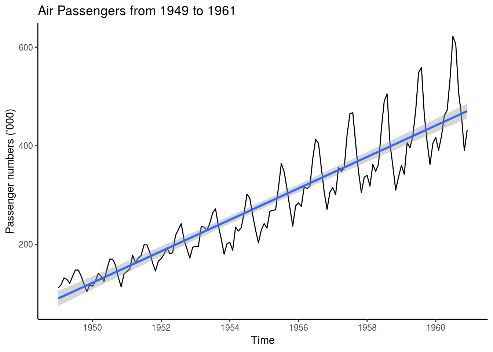
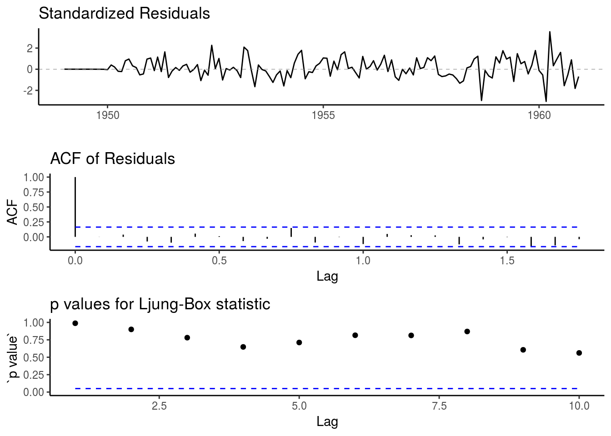
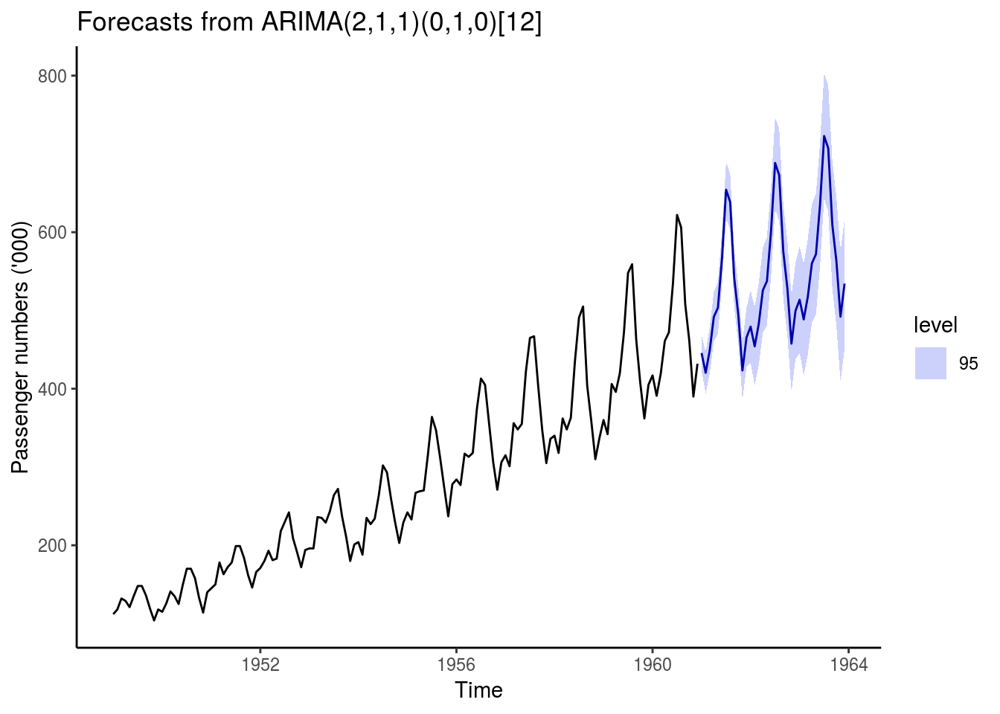

Preamble:
This document focuses on the analysis of the airpassengers dataframe.
The AirPassenger dataset in R provides monthly totals of US airline passengers, from 1949 to 1960.
Description of dataframe airpassengers can be found at https://stat.ethz.ch/R-manual/R-devel/library/datasets/html/airpassengers.html
Research question:
- through analysis and modelling, preview a time series forecast
Structure of analysis:
I will asssess whether a linear regression or arima model is a best fit for the time series forecast as follows:
- Exploratory data analysis
- Data decomposition
- Stationarity test
- Fit a model using an algorithm
- Forecasting
data(AirPassengers)
AP <- AirPassengers
# Take a look at the class of the dataset AirPassengers
class(AP)## [1] "ts"The dataset is already of a time series class.
Exploratory data analysis
# preview of data
AP## Jan Feb Mar Apr May Jun Jul Aug Sep Oct Nov Dec
## 1949 112 118 132 129 121 135 148 148 136 119 104 118
## 1950 115 126 141 135 125 149 170 170 158 133 114 140
## 1951 145 150 178 163 172 178 199 199 184 162 146 166
## 1952 171 180 193 181 183 218 230 242 209 191 172 194
## 1953 196 196 236 235 229 243 264 272 237 211 180 201
## 1954 204 188 235 227 234 264 302 293 259 229 203 229
## 1955 242 233 267 269 270 315 364 347 312 274 237 278
## 1956 284 277 317 313 318 374 413 405 355 306 271 306
## 1957 315 301 356 348 355 422 465 467 404 347 305 336
## 1958 340 318 362 348 363 435 491 505 404 359 310 337
## 1959 360 342 406 396 420 472 548 559 463 407 362 405
## 1960 417 391 419 461 472 535 622 606 508 461 390 432Passenger numbers in (’000) per month for the relevant years.
# test for missing values
sum(is.na(AP))## [1] 0Zero missing values GREAT!
# test frequency
frequency(AP)## [1] 1212 calendar months.
# test cycle
cycle(AP)## Jan Feb Mar Apr May Jun Jul Aug Sep Oct Nov Dec
## 1949 1 2 3 4 5 6 7 8 9 10 11 12
## 1950 1 2 3 4 5 6 7 8 9 10 11 12
## 1951 1 2 3 4 5 6 7 8 9 10 11 12
## 1952 1 2 3 4 5 6 7 8 9 10 11 12
## 1953 1 2 3 4 5 6 7 8 9 10 11 12
## 1954 1 2 3 4 5 6 7 8 9 10 11 12
## 1955 1 2 3 4 5 6 7 8 9 10 11 12
## 1956 1 2 3 4 5 6 7 8 9 10 11 12
## 1957 1 2 3 4 5 6 7 8 9 10 11 12
## 1958 1 2 3 4 5 6 7 8 9 10 11 12
## 1959 1 2 3 4 5 6 7 8 9 10 11 12
## 1960 1 2 3 4 5 6 7 8 9 10 11 12# dataset summary
summary(AP)## Min. 1st Qu. Median Mean 3rd Qu. Max.
## 104.0 180.0 265.5 280.3 360.5 622.0Statistical values.
# plot the raw data using the base plot function
autoplot(AP) + labs(x="Time", y ="Passenger numbers ('000)", title="Air Passengers from 1949 to 1961") +
theme_classic()
boxplot(AP~cycle(AP), xlab="Passenger Numbers ('000)", ylab="Months", col=rgb(0.1,0.9,0.3,0.4), main="Monthly Air Passengers Boxplot from 1949 to 1961", horizontal=TRUE, notch=FALSE)
Observations:
- The passenger numbers increase over time with each year which may be indicative of an increasing linear trend. Possible due to an increase in demand for flights and commercialisation of airlines in that time period.
- The boxplot shows more passengers travelling in months 6 to 9 with higher averages and higher variances than the other months, indicating seasonality within an apparent cycle of 12 months. The rationale for this could be more people taking holidays and fly over the summer months in the US.
- The dataset appears to be a multiplicative time series, since passenger numbers increase, with a pattern of seasonality.
- There do not appear to be any outliers and there are no missing values.
Data decomposition
I’ll decompose the time series for estimates of trend, seasonal, and random components using moving average method.
The multiplicative model is:
Y[t]=T[t]∗S[t]∗e[t]
where
Y(t) is the number of passengers at time t, T(t) is the trend component at time t, S(t) is the seasonal component at time t, e(t) is the random error component at time t.
decomposeAP <- decompose(AP,"multiplicative")
autoplot(decomposeAP) +
theme_classic()
Observations:
- In these decomposed plots we can again see the trend and seasonality as inferred previously, but we can also observe the estimation of the random component depicted under the “remainder”.
Stationarity test
A stationary time series has the conditions that the mean, variance and covariance are not functions of time. In order to fit arima models, the time series is required to be stationary. I’ll use two methods to test the stationarity.
- Test stationarity of the time series (ADF)
In order to test the stationarity of the time series, let’s run the Augmented Dickey-Fuller (ADF) Test. using the adf.test function from the tseries R package.
First set the hypothesis test:
The null hypothesis: that the time series is non stationary The alternative hypothesis: that the time series is stationary
adf.test(AP)## Warning in adf.test(AP): p-value smaller than printed p-value##
## Augmented Dickey-Fuller Test
##
## data: AP
## Dickey-Fuller = -7.3186, Lag order = 5, p-value = 0.01
## alternative hypothesis: stationaryAs a rule of thumb, where the p-value is less than 5%, we reject the null hypothesis. As the p-value is 0.01 which is less than 0.05 we reject the null in favour of the alternative hypothesis that the time series is stationary.
- Test stationarity of the time series (Autocorrelation)
Another way to test for stationarity is to use autocorrelation. I’ll use autocorrelation function (acf). This function plots the correlation between a series and its lags ie previous observations with a 95% confidence interval in blue. If the autocorrelation crosses the dashed blue line, it means that specific lag is significantly correlated with current series.
autoplot(acf(AP, plot=FALSE)) + labs(title="Correlogram of Air Passengers from 1949 to 1961") +
theme_classic()
Observations:
- The maximum at lag 1 or 12 months, indicates a positive relationship with the 12 month cycle.
Since we have already created the decomposeAP list object with a random component, we can plot the acf of the decomposeAP$random.
# review random time series for any missing values
decomposeAP$random ## Jan Feb Mar Apr May Jun Jul
## 1949 NA NA NA NA NA NA 0.9516643
## 1950 0.9626030 1.0714668 1.0374474 1.0140476 0.9269030 0.9650406 0.9835566
## 1951 1.0138446 1.0640180 1.0918541 1.0176651 1.0515825 0.9460444 0.9474041
## 1952 1.0258814 1.0939696 1.0134734 0.9695596 0.9632673 1.0003735 0.9468562
## 1953 0.9976684 1.0151646 1.0604644 1.0802327 1.0413329 0.9718056 0.9551933
## 1954 0.9829785 0.9232032 1.0044417 0.9943899 1.0119479 0.9978740 1.0237753
## 1955 1.0154046 0.9888241 0.9775844 1.0015732 0.9878755 1.0039635 1.0385512
## 1956 1.0066157 0.9970250 0.9876248 0.9968224 0.9985644 1.0275560 1.0217685
## 1957 0.9937293 0.9649918 0.9881769 0.9867637 0.9924177 1.0328601 1.0261250
## 1958 0.9954212 0.9522762 0.9469115 0.9383993 0.9715785 1.0261340 1.0483841
## 1959 0.9825176 0.9505736 0.9785278 0.9746440 1.0177637 0.9968613 1.0373136
## 1960 1.0039279 0.9590794 0.8940857 1.0064948 1.0173588 1.0120790 NA
## Aug Sep Oct Nov Dec
## 1949 0.9534014 1.0022198 1.0040278 1.0062701 1.0118119
## 1950 0.9733720 1.0225047 0.9721928 0.9389527 1.0067914
## 1951 0.9397599 0.9888637 0.9938809 1.0235337 1.0250824
## 1952 0.9931171 0.9746302 1.0046687 1.0202797 1.0115407
## 1953 0.9894989 0.9934337 1.0192680 1.0009392 0.9915039
## 1954 0.9845184 0.9881036 0.9927613 0.9995143 0.9908692
## 1955 0.9831117 1.0032501 1.0003084 0.9827720 1.0125535
## 1956 1.0004765 1.0008730 0.9835071 0.9932761 0.9894251
## 1957 1.0312668 1.0236147 1.0108432 1.0212995 1.0005263
## 1958 1.0789695 0.9856540 0.9977971 0.9802940 0.9405687
## 1959 1.0531001 0.9974447 1.0013371 1.0134608 0.9999192
## 1960 NA NA NA NA NA# autoplot the random time series from 7:138 which exclude the NA values
autoplot(acf(decomposeAP$random[7:138], plot=FALSE)) + labs(title="Correlogram of Air Passengers Random Component from 1949 to 1961") +
theme_classic()
Observations:
- acf of the residuals are centered around zero.
Fit a model using an algorithm
1. Linear regression Model
Given there is an upwards trend we’ll look at a linear model first for comparison.
autoplot(AP) + geom_smooth(method="lm") + labs(x="Time", y="Passenger numbers ('000)", title="Air Passengers from 1949 to 1961") +
theme_classic()
Observations:
- This may not be the best model to fit as it doesn’t capture the seasonality and multiplicative effects over time.
2. ARIMA Model
Using the auto.arima function from the forecast R package to fit the best model and coefficients, given the default parameters including seasonality as TRUE.
arimaAP <- auto.arima(AP)
arimaAP## Series: AP
## ARIMA(2,1,1)(0,1,0)[12]
##
## Coefficients:
## ar1 ar2 ma1
## 0.5960 0.2143 -0.9819
## s.e. 0.0888 0.0880 0.0292
##
## sigma^2 estimated as 132.3: log likelihood=-504.92
## AIC=1017.85 AICc=1018.17 BIC=1029.35The ARIMA(2,1,1)(0,1,0)[12] model parameters are lag 1 differencing (d), an autoregressive term of second lag (p) and a moving average model of order 1 (q). Then the seasonal model has an autoregressive term of first lag (D) at model period 12 units, in this case months.
ggtsdiag(arimaAP) +
theme_classic()
Observations:
- The residual plots appear to be centered around 0 as noise, with no pattern. The arima model is a fairly good fit.
Forcasting
Plot a forecast of the time series using the forecast function, again from the forecast R package, with a 95% confidence interval where h is the forecast horizon periods in months.
forecastAP <- forecast(arimaAP, level = c(95), h = 36)
autoplot(forecastAP) + labs(x="Time", y="Passenger numbers ('000)") +
theme_classic()